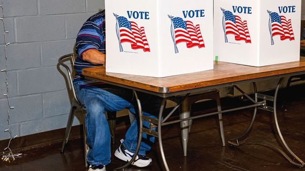

Jul 09, 2026 05:22 AM | WASHINGTON, DC

AS THE MIDTERMS approach, Congress often becomes less productive. Members spend more time on the campaign trail, where they don’t want to have to defend controversial votes. The incentive to compromise diminishes, not that there was much to begin with. Yet this Congress recently passed a bipartisan bill aimed at lowering housing costs. In the coming months it is due to take up other measures, including annual defence legislation and government-funding bills.
But even that modest agenda has been thrown into doubt by Donald Trump’s fixation on a bill with little chance of becoming law. Mr Trump says he will not sign any legislation until the SAVE Act is approved. Prediction markets put its odds at less than one in ten. John Thune, the Republican leader in the Senate, has repeatedly told the president that the measure lacks the 60 votes needed to overcome a filibuster. “This is a distraction,” says a Republican aide. “We would like to be done with this, but it’s an issue that won’t go away.” Why, then, won’t the president let it?
At its core the SAVE Act would require voters to provide proof of citizenship, such as a passport or birth certificate, when registering to vote. They would also have to present photo identification to cast a ballot. States would be required to compare voter-registration rolls with federal citizenship records. Supporters describe the measure as an election-integrity reform that would increase public confidence and ensure that only citizens vote. Yet evidence of voter fraud by non-citizens—or anyone else—is vanishingly rare.
The SAVE Act would, however, make it harder for citizens to register and vote. Around 12% of registered voters could not produce documentary proof of citizenship on short notice, according to the Bipartisan Policy Centre, a think-tank. Roughly half of Americans do not have a valid passport. Democrats and Republicans are about equally apt to have at least one qualifying document. Yet Republicans rely more heavily on birth certificates, which are more likely than passports to be rejected because of discrepancies. The SAVE Act could therefore hurt Mr Trump’s own party more than Democrats.
For Mr Trump, the politics of the act may matter more than its practical effects. A recent Economist/YouGov poll found that 82% of Republicans thought voting by non-citizens in American elections was a serious issue, compared with 41% of independents and just 13% of Democrats. A majority of Americans (56%) support requiring documentary proof of citizenship to register to vote, but that view is held by almost all self-identified MAGA supporters (94%). “They love this, and so Trump’s going to continue talking about it,” says Douglas Heye, a Republican strategist. “And if Trump puts himself in a place where he’s fighting the leadership of his own party, his base loves that, too.”
In private, Republican aides concede that Mr Trump will probably use the bill’s failure as a pretext to blame lawmakers if the party loses seats in the midterms. Critics see a broader purpose. They argue that the SAVE Act is part of an effort to undermine trust in elections. “The strategy was never about necessarily passing this bill,” argues Alexandra Chandler of Protect Democracy, a non-profit. “It’s about setting the pretext to claim that if Democrats win, then the election can’t be trusted.” Mr Trump has repeatedly made such claims. Earlier this month his administration ordered the FBI to beef up an investigation related to the 2020 election in Georgia, reviving his baseless allegations of widespread fraud in the contest he lost.
Whatever the fate of the SAVE Act, Americans’ trust in the electoral process has already been deeply eroded, not least by Mr Trump’s repeated attacks on election integrity. Around 60% say they are confident votes will be counted accurately—a 17-point drop from two years ago. Only 25% say they are confident the midterms will not suffer interference.
Meanwhile, the work of Congress has stalled. On June 30th a group of Republicans in the House blocked a defence bill from advancing in an effort to force Senate action on the SAVE Act. A week earlier, inside one of the Capitol’s gilded halls, lawmakers from both parties milled around a stage, waiting for Mr Trump to sign the housing bill. But he was a no-show, refusing to do so until the SAVE Act was passed. To Mr Trump, “just about everything is a big yawn” by comparison. ■
Stay on top of American politics with The US in brief, our daily newsletter with fast analysis of the most important political news, and Checks and Balance, a weekly note that examines the state of American democracy and the issues that matter to voters.